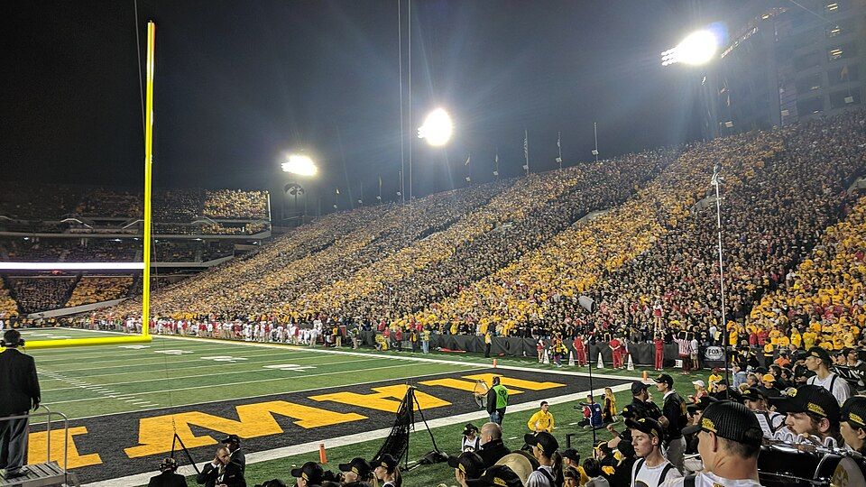

Prearranged parking
If you have a reserved space or parking pass, confirm the entrance, arrival window, and any game-day restrictions before leaving.

Prepare for your Iowa football visit with parking research tips, arrival planning, and ways to get around Iowa City.
Parking availability, access restrictions, and traffic patterns can vary by game. Check current official information before choosing a lot or route.
If you have a reserved space or parking pass, confirm the entrance, arrival window, and any game-day restrictions before leaving.
Consider whether a legal parking location farther from the stadium offers a more comfortable arrival. Review walking distance and accessibility.
Research current public transportation, rideshare, and designated drop-off options. Do not assume ordinary pickup points remain open on game day.
Look up the current stadium parking map, check road closures, and save the location of your parking area. Give yourself extra time for crowds and keep your return route in mind.
Still planning your day? Find food near the stadium or explore tailgating and traditions.